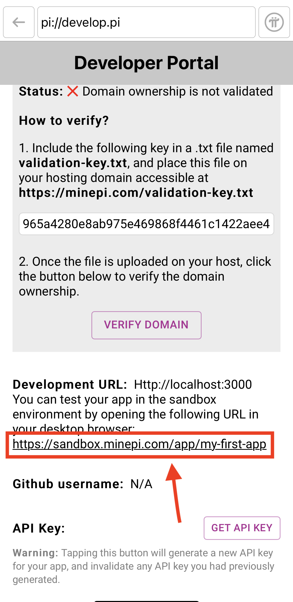
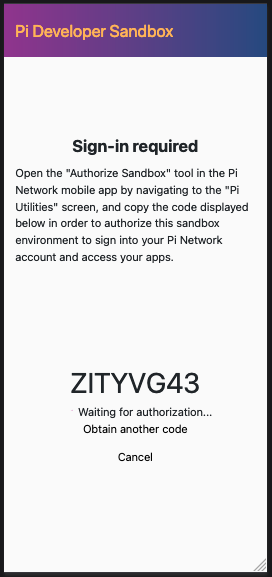
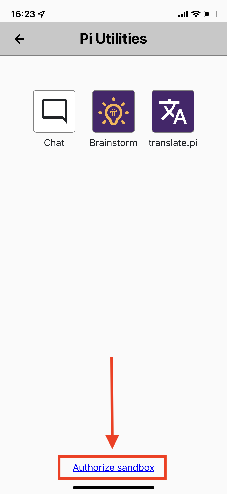
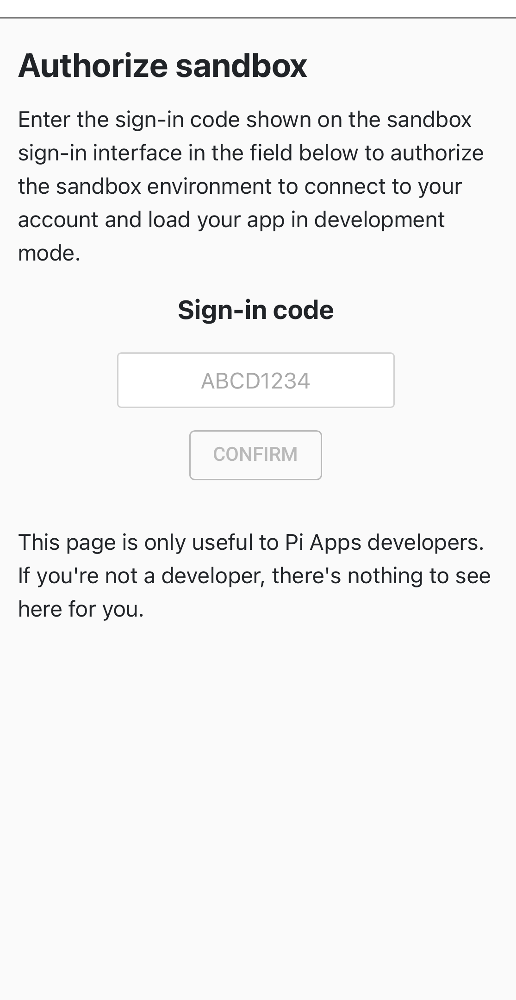
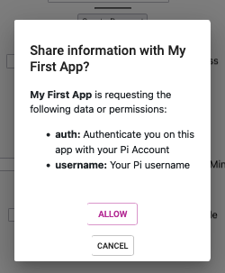

Pi App Platform SDK
The SDK is a developer’s method to interact with and obtain information from Pi Network. Developers can request information such as a Pioneer’s username or create a payment within Pi Browser.
Table of contents
How to integrate it
HTML Code
To use the Pi App Platform SDK, you need to add the SDK script tag to the frontend HTML code of your app’s home page. For most developers this will be the index.html file that is used as the “/” route or home page. Next you need to call the init function to initialize the SDK. You need to specify the version to ensure compatibility with future SDK releases.
In the below code example the first script tag calls the SDK while the second script tag calls the init function and declares the version the SDK.
<script src="https://sdk.minepi.com/pi-sdk.js"></script>
<script> Pi.init({ version: "2.0" }) </script>As of June 2022, version 2.0 is the latest.
The Sandbox Flag
If you want to operate the Pi App Platform SDK within a local environment there is an optional tag that can be applied titled sandbox. You must have configured a development URL in the developer portal to use this feature. When testing within the Sandbox the flag should be set to true.
<script src="https://sdk.minepi.com/pi-sdk.js"></script>
<script> Pi.init({ version: "2.0", sandbox: true }) </script>If you’re using a framework or a boilerplate that supports it, you should be able to set up your sandbox flag to match your development environment. For example, most good Node boilerplates will set up the value of process.env.NODE_ENV to either “development” or “production”, and you could do something like:
<script> Pi.init({ version: "2.0", sandbox: <%= process.env.NODE_ENV !== 'production' %> }) </script> This depends on your setup, but running the SDK in sandbox mode will generally happen whenever your app is running in development.
Sandbox URL
To obtain the URL for your app within the Sandbox open the Pi Browser and navigate to your app’s Developer Portal Page. Scroll to the bottom of the page and look for a section titled “Development URL.” 
Copy and paste the URL found in that section into your prefered desktop browser and hit enter.
You will be redirected to a page that looks similar to the below image and says “Sign-in required” and has a random string of letters and numbers on it.

Authorize Sandbox
You now need to authorize the sandbox to access you app within the Sandbox. This is required so that the Pi Servers know what Pioneer is accessing the sandox. To do this on your mobile phone open the Pi App. Within the sidebar menu click on the “Pi Utilities” option. You will be presented the screen below, and you need to click the link for “Authorize Sandbox” at the bottom of the page.

After clicking on the “Authorize Sandbox” link you will be brought to the below page. Using the code displayed on the page within the desktop browser enter it into the “Sign-in code” field and click “confirm.”

The “Sign-In Required” page on the desktop browser should now redirect to the home page of your app. You are now able to test the functionality of your app within a local environment. You will need Test-Pi in you Pi Wallet to make any transactions. For more information on payments see the Pi Payments section.
Calling the Pi App Platform SDK within your App
Window.Pi
In order to call the SDK you must first initalize a new window directed towards Pi. This can be done using the follow code:
const Pi = window.Pi;You may name the varible whatever you prefer in this guide we use Pi. Now that the window has been initialized it is time to start utilizing the functions offered by the Pi App Platform SDK.
Functions
A more detailed explination of functionality and use cases for payments and access token are covered in depth within the Important Topics section.
Authenticate
The Authenicate funcation will request the Pioneer’s scope and retun them to the App in the form of a promise.
Scopes, are aspects of a Pioneer’s information which can be requested by an application. The information is obscured when possible to protect the Pioneer. The Authenticate function will always return the uid and accessToken even when an empty array is passed for scopes requested.
The Access Token is a dynamic identifier which can be used inconjuction with the Pi App Platform APIs to verify a Pioneer. The Access Token will change at set time intervals and should not be used to create a unique record for a Pioneer. The uid is an app-local identifier for the Pioneer, in that the uid is specific to that Pioneer, and the app.
Calling Authenticate
The Authenticate function takes two arguements, scopes and onIncompletePaymentFound. Scopes is an array of strings and onIncompletePaymentFound is a pre-coded callback function. Both arguments are implemented by the developer and explinations are below.
Javascript code example that will call the authenticate function and log the return in the console:
const Pi = window.Pi;
// Empty array for testing purposes:
const scopes = [ ];
//Empty function that will log an incomplete payment if found
//Developer needs to implement this callback function
function onIncompletePaymentFound(payment) {
console.log(payment);
};
Pi.authenticate(scopes, onIncompletePaymentFound).then(function(auth){
console.log(auth)
}).catch(function(error) {
console.error(error);The empty scopes array will return a promise object in Javascript:
Object{
accessToken: string,
user: {
uid: string,
}
}Security Note: The Pioneer information obtained with this method, uid and accessToken, should not be saved to your database and should only be used for presentation logic (e.g displaying the Pioneer’s username). Pass them to your backend and then verify the Pioneer’s identity by requesting the /me endpoint of the Pi Platform APIs, using the accessToken obtained with this method. The return from the /me endpoint will contain the uid for the Pioneer or will result in an error code if the Access Token is not found or valid. Pi Platform APIs are covered in depth on the Pi App Platform APIs page of this guide.
Pioneer Approval
When a Pioneer visits the app for the first time they will be presented a popup asking for permission to share their information with the app. Each scope requested will appear to the Pioneer and the Pioneer can choose to “Allow” or “Cancel” the request. When deciding what scopes to request its best to limit to only the needed scopes for core functionality of the app. Asking for too much information could result in Pioneers declining the request to share information with your app.
The screen presented to Pioneers when visiting an app for the first time:

The app will not receive any information from Pi until the Pioneer approves this request. If the Pioneer fails to respond to the request then it will time out and the app will not be sent the requested information. The Pioneer will need to reload the page and then confirm their decision.
Scopes
username
The username scope will return a Pioneer’s username allowing the developer to integrate personalization into their app for the Pioneer. It can also be used for displaying progress or achievements such as on a leaderboard for a game.
To request the username add the sting ‘username’ into the scopes array variable. Note this will not remove the accessToken or the uid from being returned.
const scopes = ['username'];The returned promise in Javascript:
Object{
accessToken: string,
user: {
uid: string,
username: string
}
}Payments
The payments string is needed to initialize Pi payments. It does not return any information within then returned promise object from the Authenticate function. To include it see the below code example:
Code Exapmle
// Requesting payment scope from the Pi App Platform SDK:
const scopes = ['payments'];
//Empty function that will log an incomplete payment if found
//Developer needs to code this callback function
function onIncompletePaymentFound(payment) {
console.log(payment);
};
Pi.authenticate(scopes, onIncompletePaymentFound).then(function(auth){
console.log(auth)
}).catch(function(error) {
console.error(error);Now that you have implemented the payment scope you can create payments.
Create Payment
The Pi App Platform SDK function to create a payment takes two arguments paymentData and paymentCallback.
Payment Data is the variables of the payment and in Javascript it should be constructed using a Object {}. The format for the object is as follow, you can name the object as you prefer:
const paymentData = {
amount: number, /* Pi Amount being Transacted */
memo: string, /* "Any information that you want to add to payment" */
metadata: object {}, /* { Special Information: 1234, ... } */
};The paymentCallbacks are a group of callback functions that will be utilized at points throughout the payment flow. The callback will come from the Pi App Platform SDK and each function is prefilled with the arguments it will receive. When implementing these functions the information should be passed to your server side to utilize the Pi App Platform APIs. Its important to have them all implemented so the app can handle errors.
// Callbacks the developer needs to implement:
const paymentCallbacks = {
onReadyForServerApproval: function(paymentId) { /* ... */ },
onReadyForServerCompletion: function(paymentId, txid) { /* ... */ },
onCancel: function(paymentId) { /* ... */ },
onError: function(error, payment) { /* ... */ }
};Here is a sample payment for 1 Pi using Javascript code and combining the variables from above. A .then function is used after the createPayment function to get the returned information and print it to the console and the .catch function receives any errors and prints them to the console. You don’t need to implement the error handling into your code but it makes troubleshooting much easier.
const paymentData = {
amount: 1,
memo: 'This is a Test Payment',
metadata: { InternalPaymentID: 1234 },
};
// Callbacks the developer needs to implement:
const paymentCallbacks = {
onReadyForServerApproval: function(paymentId) { /* ... */ },
onReadyForServerCompletion: function(paymentId, txid) { /* ... */ },
onCancel: function(paymentId) { /* ... */ },
onError: function(error, payment) { /* ... */ }
};
Pi.createPayment(paymentData, paymentCallbacks).then(function(payment) {
console.log(payment)
}).catch(function(error) {
console.error(error);
});
}
The SDK is now integrated and you are ready to implement the Pi APIs